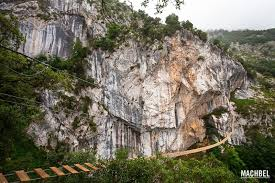
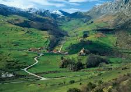
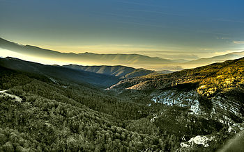
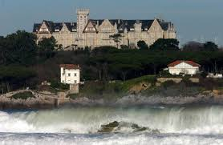
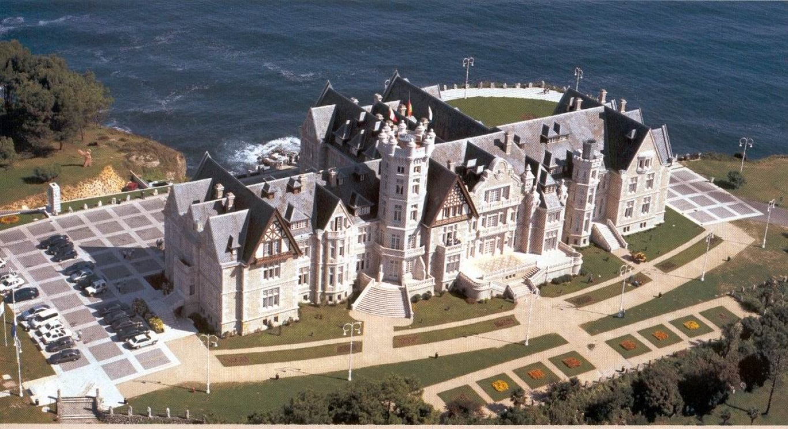
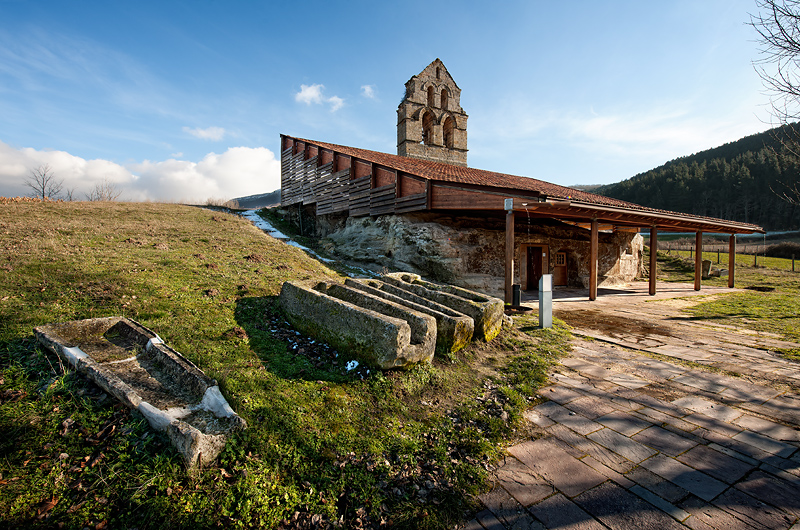
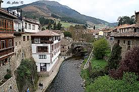
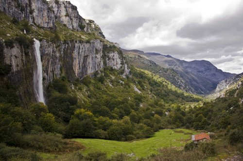

Cantabria, esa tierra prodigiosa
Valiosos bosques autóctonos, costumbres ancestrales, valles pasiegos, una gastronomía memorable,
pueblos con historia... Cantabria lo tiene todo para poder disfrutar en familia o con amigos de
una escapada otoñal.
En esta comunidad de la cornisa Cantábrica todo es posible, pues su patrimonio histórico y
paisajístico brinda la oportunidad de disfrutar de excursiones al aire libre, deportes de
aventura, rutas por sus pueblos más emblemáticos, una gastronomía auténtica y tradiciones
que perduran en el tiempo.
1. El modernismo de Comillas y Gaudí

El Capricho de Gaudí es uno de los emblemas de la Comillas monumental, salpicada de
edificios modernistas y que tiene su origen bajo el patronazgo de don Antonio López,
primer Marqués de Comillas, quien consiguió que durante el verano de 1881 el rey
Alfonso XII disfrutase sus vacaciones en la localidad, convirtiéndose así en el lugar
elegido por la aristocracia como centro de veraneo. Esto permitió que importantes
arquitectos modernistas catalanes del momento realizaran allí buena parte de sus obras,
dotándola así de un conjunto de extraordinaria belleza. Además de El Capricho, el
modernismo se respira en el Palacio de Sobrellano, obra de Juan Martorell, y la
Universidad Pontificia (de Martorell y Cascante con detalles ornamentales y la
portada de acceso de Doménech).
2. Vías ferratas, aventura en la montaña

Las cinco vías ferratas con las que cuenta convierten a Cantabria en comunidad pionera
y única en este tipo de oferta de toda la cornisa Cantábrica. Se trata de cinco
atractivos recorridos verticales para los amantes de la aventura en la montaña: Ferrata
La Hermida (La Hermida); Ferrata Camaleño (Camaleño); El Cáliz (Ramales de la Victoria),
El Risco (Matienzo-Ruesga) y Socueva (Socueva-Arredondo). Estas instalaciones ofrecen al
visitante la posibilidad de iniciarse en la escalada deportiva y disfrutar en familia o
individualmente, según el nivel de dificultad elegido, de paseos únicos por paredes
rocosas, puentes tibetanos, travesías espectaculares, recorridos por sendas, bosques
autóctonos y cascadas.
3. Ruta de los Foramontanos

De carácter histórico, la Ruta de los Foramontanos se llama así por ser el camino que
tomaban los cántabros que salían de las montañas tras la Reconquista para repoblar las
tierras de Castilla. La senda transita por los pueblos del Valle de Cabuérniga, partiendo
desde Cabezón de la Sal o Mazcuerras (cuna de la escritora cántabra Concha Espina):
Carrejo, Ucieda, Ruente, Terán de Cabuérniga, Renedo de Cabuérnida, Fresneda... Todos
ellos, sobre todo en la cuenca baja del Saja, se caracterizan por sus casonas de piedra,
con grandes solanas y balcones. Son parte de un paisaje de pastos, praderías y monte bajo.
Ascendiendo el curso del río, nos encontramos con las localidades de Saja, Los Tojos o
Correpoco, algunos como Colsa, que han perdido a todos sus habitantes. En medio de la
reserva, hallamos el pintoresco pueblo de Bárcena Mayor. Tras pasar el puerto de
Palombera, la ruta sigue por los pueblos de Campoo hasta llegar a la frontera con
Palencia.
4. Valles Pasiegos, «secreto de Cantabria»

El otoño es una época ideal para visitar la comarca de los Valles Pasiegos, marcada
por tres cuencas fluviales: la de los ríos Pas, Pisueña y Miera. Su paisaje verde
responde al estereotipo más difundido de Cantabria, el de valles verdes y ríos
intrincados, pastizales que se pierden tras las lomas de las montañas y tradiciones
rurales que tienen su máximo exponente en los paisajes de cabañas construidas en
inaccesibles laderas, hondonadas y alturas. Situada en el corazón de Cantabria,
la comarca es una de las zonas con más personalidad de la región y en ella aún
persisten formas de vida con gran interés etnográfico. Lo más singular de estos
valles es la práctica ancestral de la trashumancia o muda. Se trata de un ciclo
anual de pastoreo nómada que llevaba a las familias de cabaña en cabaña y que, aún
en nuestros días, se sigue realizando.
5. Santander, apuesta por la gastronomía


El termómetro de la alta cocina en Cantabria sube muchos grados, los cocineros pisan
con más fuerza que nunca en el panorama nacional. Los cinco restaurantes con estrella
Michelín (Annua, Cenador de Amós, La Solana, El Nuevo Molino y El Serbal) son la punta
de lanza de uno de los paraísos gastronómicos más singulares y ricos de España. El
recorrido gastronómico puede iniciarse en Santander. El centro de la capital cántabra
se presenta como una ola de tascas tradicionales, cosmopolitas restaurantes, cafeterías
de diseño y pubs de culto que se adaptan a las diferentes necesidades de santanderinos
y visitantes.
6. Ermitas rupestres de Valderredible

Los 53 pueblos que integran el municipio de Valderredible sorprenden al viajero con
infinidad de sorpresas en forma de vestigios históricos, cuevas, iglesias románicas,
ermitas excavadas en roca, necrópolis... Muestra de este singular patrimonio histórico
son las iglesias y ermitas rupestres. En esta comarca meridional se conserva más de medio
centenar de conjuntos de arquitectura rupestre de los siglos VI al X. Se trata de una
arquitectura excavada en roca o construida en cuevas que legó un buen número de iglesias,
celdas, eremitorios y cenobios. Entre las más destacadas se encuentran las de Santa
María de Valverde, San Andrés de Valdelomar, Campo de Ebro, Arroyuelos y Cadalso. Para
entenderlo todo, junto a Santa María de Valverde se encuentra el Centro de Interpretación
del Rupestre.
7. Cita con el Orujo en Potes

Fiel a su cita anual, la Fiesta del Orujo de Potes, declarada de Interés Turístico Nacional,
se celebrará el segundo fin de semana de noviembre (del 8 al 10). Las calles de Potes
recuperarán el olor dulzón propio de la destilación del aguardiente en las alquitaras de
bronce. Durante horas, estos antiguos alambiques elaborarán el orujo tal y como se hacía
en el valle de Liébana desde la Edad Media. El actor santanderino Eduardo Noriega, en
calidad de Orujero Mayor, será el encargado de encender la alquitara con la que se da
inicio a este evento. Potes es una pequeña villa que si por algo se caracteriza es por
sus construcciones emblemáticas, insignias de la región. Sus calles armonizan este
entorno rural, histórico y cultural que no ha perdido sus tradiciones. Un paseo por
Potes es trasladarse a otra época, a los pies de los Picos de Europa. Callejuelas y
caserones guían nuestros pasos hacia maravillas arquitectónicas como la Torre del
Infantado o de Orejón de la Lama.
8. Alto Asón y sus 4.500 cuevas

Entre los grandes atractivos del Alto Asón, aparte de sus espectaculares cascadas o la
red de miradores de montaña, se cuenta la riqueza natural del subsuelo. Su patrimonio
subterráneo lo componen más de 4.500 cuevas, algunas de una calidad única, gran belleza
y grandiosidad. Como ejemplo, destaca la sala situada dentro de la cueva de la Torca del
Carlista, en cuyo interior cabrían tres campos de fútbol, o la temida travesía Cueto-Coventosa,
la más famosa ruta subterránea de España. Estas cuevas, una paraíso para expertos espeleólogos,
están también abiertas a aquellos visitantes que deseen experimentar nuevas sensaciones
recorriendo Cantabria por su subsuelo, pues la mayor parte de las cuevas destinadas a los
espeleo-paseos son accesibles para todo el mundo: desde cuevas totalmente horizontales sin
cuerdas y de gran recorrido, a otras en las que el rapel forma parte de la visita. Cada
visitante elige el grado de dificultad y de aventura. Entre estas cuevas destacan Coventosa,
Escalón, Sopladoras del Agua, Fresca y Reñada.